Шайбы
112 типов изделий в категории.

ART 88100 Шайба плоская
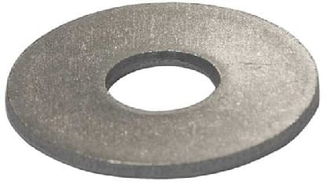
ART 88104 Шайба плоская увеличенная

ART 88120 SCHNORR S шайба стопорная

ART 88121 SCHNORR VS шайба стопорная
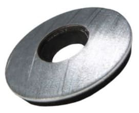
ART 88277 Шайба уплотнительная

ART 88494 Шайба уплотнительная DUBO
ART 88495 Шайба уплотнительная DUBO узкая

ART 88499 шайба-розетка конусная KORREX
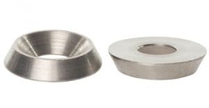
ART 9081 шайба-розетка полнотелая

DIN 1052 Шайба увеличенная

DIN 125 А шайба плоская

DIN 125 В Шайба плоская с фаской

DIN 126 Шайба плоская
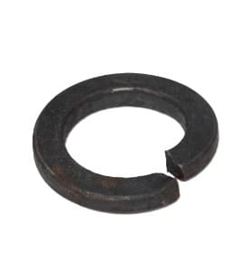
DIN 127 A Шайба пружинная гровер

DIN 127 B Шайба пружинная гровер

DIN 128 A Шайба пружинная изогнутая

DIN 128 B Шайба пружинная волнистая
DIN 134 шайба плоская

DIN 137 B Шайба пружинная волнистая

DIN 137 А Шайба пружинная изогнутая
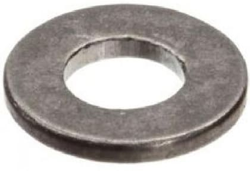
DIN 1440 Шайба усиленная
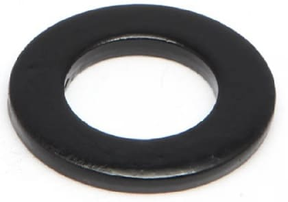
DIN 1441 Шайба усиленная
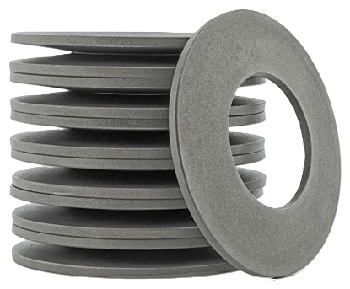
DIN 2093 Шайба пружинная тарельчатая
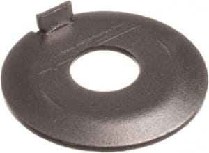
DIN 432 Шайба стопорная с наружным выступом

DIN 433 Шайба уменьшенная
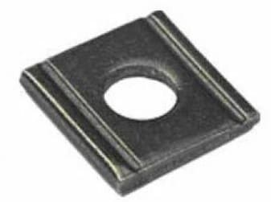
DIN 434 Шайба косая
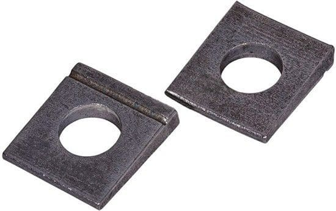
DIN 435 Шайба косая
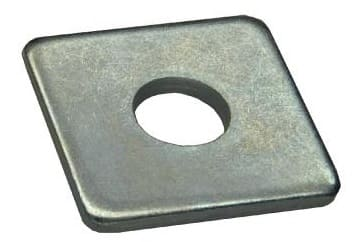
DIN 436 Шайба квадратная

DIN 440 R Шайба увеличенная

DIN 440 V Шайба увеличенная
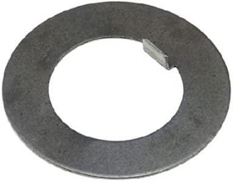
DIN 462 Шайба стопорная с внутренним выступом

DIN 463 Шайба стопорная с двумя лапками

DIN 470 Шайба запорная

DIN 471 Кольцо стопорное наружное

DIN 472 Кольцо стопорное внутреннее

DIN 5406 Шайба многолапчатая
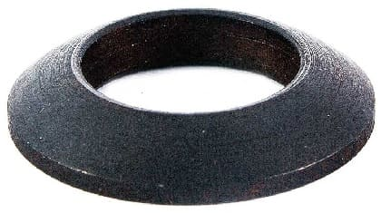
DIN 6319 C шайба сферическая

DIN 6319 D шайба коническая

DIN 6319 G шайба коническая

DIN 6340 Шайба усиленная
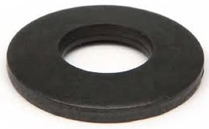
DIN 6796 Шайба тарельчатая пружинная

DIN 6797 I Шайба зубчатая стопорная с внутренними зубцами

DIN 6797 V Шайба стопорная вогнутая

DIN 6797 А Шайба зубчатая стопорная с внешними зубцами
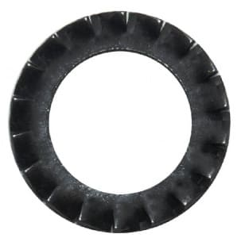
DIN 6798 A шайба стопорная с наружными зубьями
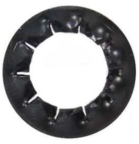
DIN 6798 I шайба стопорная с внутренними зубьями
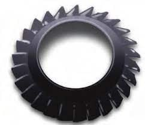
DIN 6798 V Шайба стопорная под потайные винты
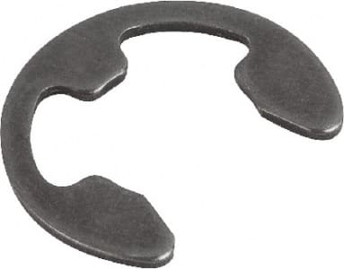
DIN 6799 Шайба стопорная быстросъёмная упорная
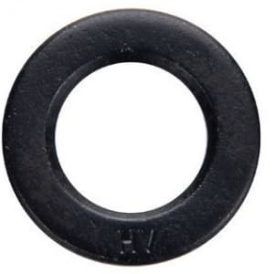
DIN 6916 / EN 14399-6 Шайба высокопрочная
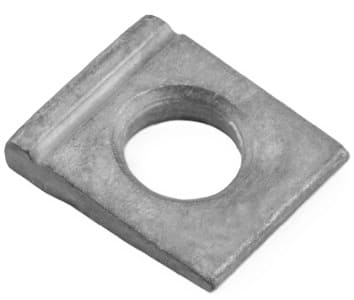
DIN 6917 Шайба косая
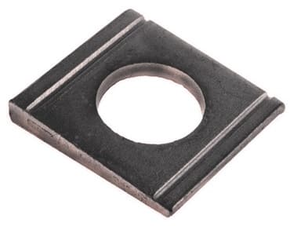
DIN 6918 Шайба косая
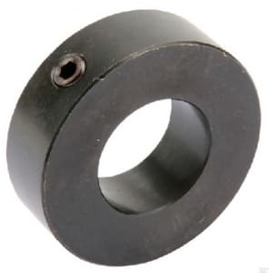
DIN 703 Кольцо установочное
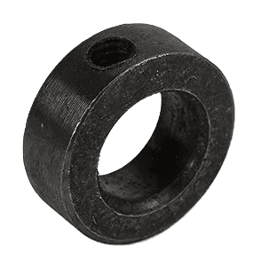
DIN 705 B Кольцо установочное
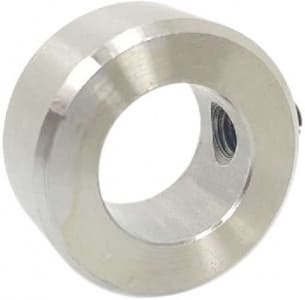
DIN 705 А Кольцо установочное

DIN 70952 Шайба многолапчатая

DIN 7349 Шайба усиленная
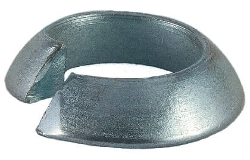
DIN 74361 Шайба сферическая

DIN 7603 Кольцо уплотнительное

DIN 7980 Шайба пружинная гроверная

DIN 7989-1 Шайба усиленная увеличенная
DIN 7989-2 Шайба усиленная увеличенная
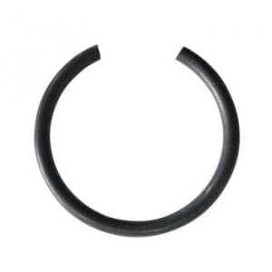
DIN 7993 B Кольцо стопорное
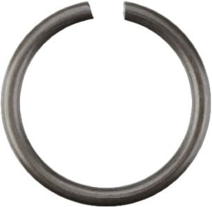
DIN 7993 А Кольцо стопорное

DIN 9021 Шайба кузовная
DIN 9021 и ГОСТ 6958 Шайбы увеличенные

DIN 93 Шайба стопорная с лапкой
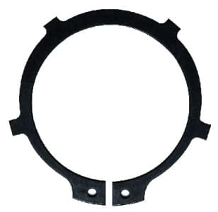
DIN 983 Кольцо стопорное

DIN 984 Кольцо стопорное
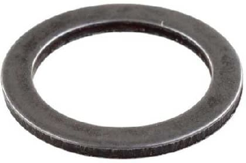
DIN 988 Шайба регулировочная
EPDM шайба кровельная
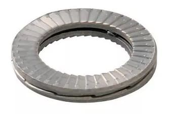
HEICO-LOCK шайба стопорная

ISO 7089 Шайба плоская
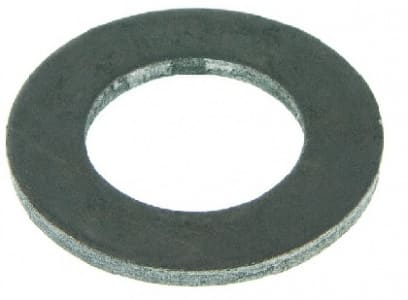
ISO 7090 Шайба плоская

ISO 7091 Шайба плоская

ISO 7092 Шайба уменьшенная
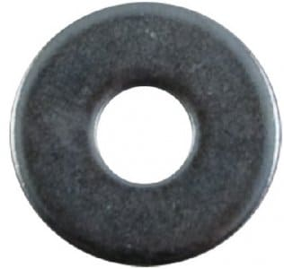
ISO 7093 Шайба кузовная
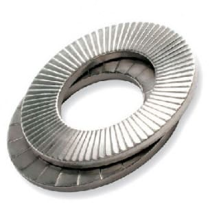
NORD-LOCK DIN 25201 Шайба стопорная

Nord-Lock DIN 25201 Шайба стопорная нержавеющая
Nord-Lock Шайба нержавеющая для агрессивных сред
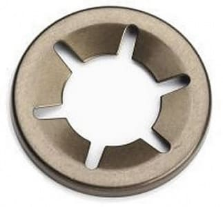
Starlock шайбы ART 88122
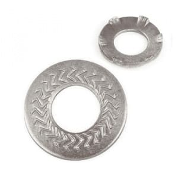
TECKENTRUP шайба контактная с зубцами тип K

TECKENTRUP шайба стопорная с насечками тип B

TECKENTRUP шайба стопорная с насечками тип M
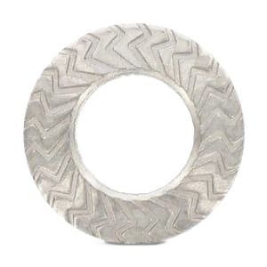
TECKENTRUP шайба стопорная с насечками тип S
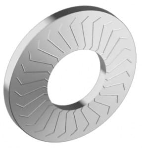
TECKENTRUP шайба стопорная с насечками тип Z

ГОСТ 10450-78 Шайба уменьшенная
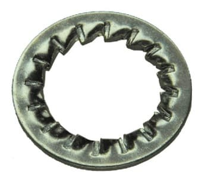
ГОСТ 10462-81 Шайба стопорная
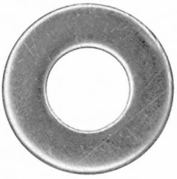
ГОСТ 11371-78 Шайба

ГОСТ 11648-75 шайба быстросъемная упорная
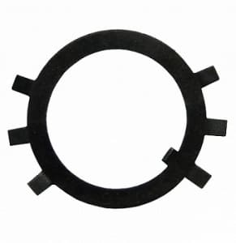
ГОСТ 11872-89 Шайба многолапчатая
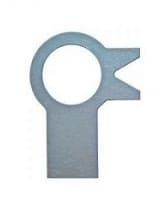
ГОСТ 13463-77 шайба стопорная с лапкой

ГОСТ 13465-77 шайба стопорная с носком
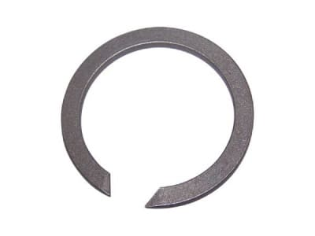
ГОСТ 13940-86 Кольцо стопорное

ГОСТ 13941-86 Кольцо стопорное

ГОСТ 13942-86 Кольцо стопорное
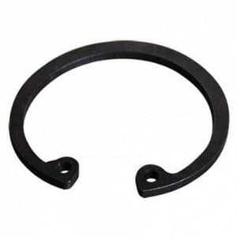
ГОСТ 13943-86 Кольцо стопорное
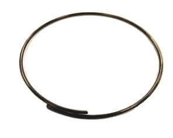
ГОСТ 2833-77 Кольцо пружинное
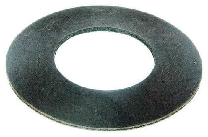
ГОСТ 3057-90 Пружина тарельчатая

ГОСТ 6402-70 шайба пружинная
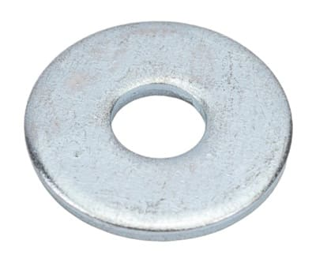
ГОСТ 6958-78 Шайба увеличенная

ГОСТ 9065-75 шайба для фланцевых соединений

ГОСТ Р 52646-2006 шайба

Кольца стопорные

Кольцо USIT гидравлическое
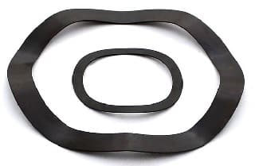
Пружина волновая
Стандарты на плоские шайбы ГОСТ 11371-78 и DIN 125

Шайба контактная с ножками

Шайба кровельная
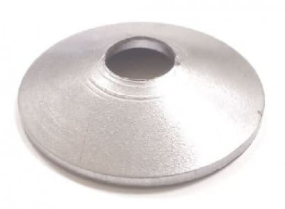
Шайба норийная
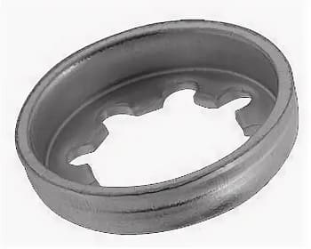
Шайба стопорная DUBO ART 88496

Шайба стопорная с насечками ART 88130